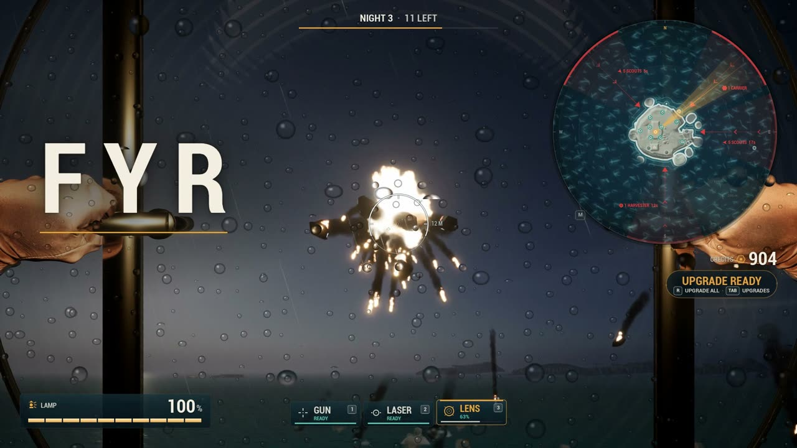
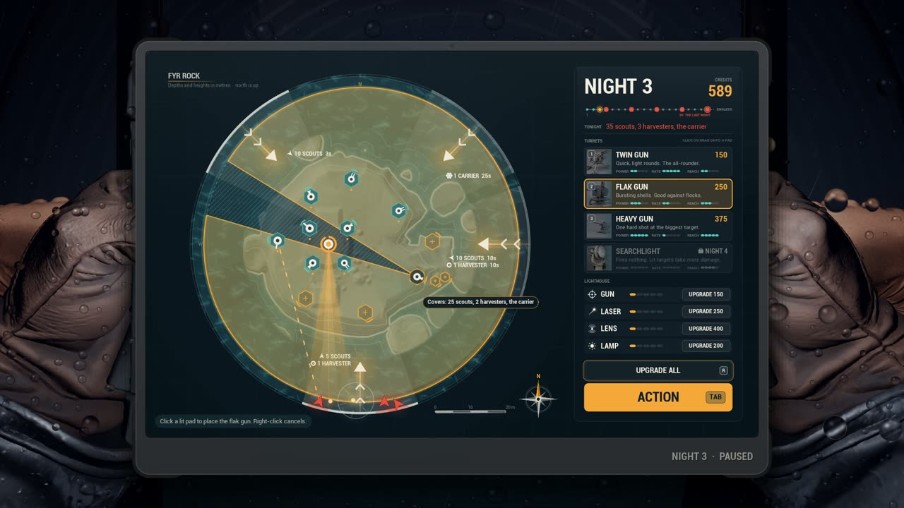
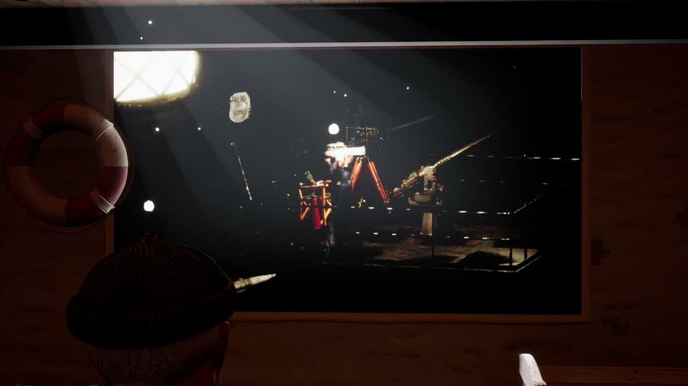

Day 3 Saturday 14 November
The gameplay video, and the faults its takes caught
3 pictures 2 failures 12 min read
Checkpoint The gameplay video cut, 19:20
This entry covers Saturday from about 14:30 to 20:35, and was written between 19:40 and 20:35 from the commits, the lanes' notes, the video's own records and the check recordings.
An older keeper who stands up straight
The developer heard the keeper's two lines in the ending (one as he sits down, one at THE END) and wanted an older man's voice. The keeper was recast with the voice model as an older man: a new designed voice, measured for its age cues against the old one, with the prompts and every take kept. Since 16:06 the sit line starts after the chair takes his weight and ends before the camera moves, and the end line ends before the credits.
He also found the generated walk from the morning leaned too far forward. A new round of takes was generated with Kimodo, asking for a man who walks upright and firm. The best take of each clip was chosen by pictures from behind and from the side. His head is lifted and the lean taken out. He holds the launcher across his body, then on his shoulder with both hands closed on its grips. In the chair his hands lie flat on the armrests. The game's clearance checks log the smallest gap between his hands and the launcher or the armrests, and every gap was above zero. The new takes went in at 15:57.
Prompt0.0 s: A strong, fit man in his fifties in a heavy coat and heavy boots walks steadily forward, upright, tired after a long night but firm…63 words
0.0 s: A strong, fit man in his fifties in a heavy coat and heavy boots walks steadily forward, upright, tired after a long night but firm on his feet. 5.1 s: The man steps up onto a stone step and then over a raised threshold, upright and steady. 7.7 s: The man takes a few steady steps forward and stops, standing upright.
The plan shows where a turret will shoot
At the PC, hovering over a pad now shows the turret's arc of fire before it is bought. The arc is a warm wedge out to the turret's real range, with its range ring. The part the rock blocks is dimmed and hatched, the rest of the chart dims, and the attack arrows the arc covers light up, with a line that says what it covers. Placed turrets keep a faint arc all the time. A strip of nights under the night's number marks a mothership every fourth night, the last night (20) and the endless nights after it. The plan was then checked at 1920x1080, 2560x1440 and 4:3, and two overlaps at 4:3 were cleared.
The hut and the rock answer when touched
Before READY, on foot, the keeper can look at a thing and press E. None of it is needed and none of it can hold him: E, Space or a step lets go, and each lets go by itself in the end.
- The film camera in the hut, and the film camp's camera and monitor on the rock, play back the drone's own frames of the first mothership's end, from the ending's save. Before that kill the screen says there is no recording yet.
- The bunk: he lies down, his eyes close, a short sleep with the storm far off, and he wakes.
- The stove: the kettle goes on, steams and whistles after a while, and the stove door opens on its embers.
- The logbook: a page for every night played, written from what really happened in it, and kept in the save.
- And more: the radio (its hiss, then a call in Morse), the wall telephone (a dead line and the wind), the barometer (tapped, its needle settles on tonight's weather), the lamps, the binoculars, the wall clock, and outside the ship's bell, the megaphone (the gulls answer), the director's chair, the generator, the camera drone and the rowing boat.
Two smaller fixes came with this. Lightning no longer lights the inside of the hut: a strike had lit the room as if it had no roof. And the screening of the drone's film in the ending now plays the sounds the drone heard, at their frames, a little quieter, and never over the keeper's line.
The developer's evening round
The developer played the evening's build and reported four faults. All four were fixed, checked and pushed by 18:16:
- No pointer on the title screen until he switched to another window and back. The gun's own start set the mouse to game-only a moment after the title had shown the pointer. Now only the game's director decides when the pointer shows, and it checks every frame.
- The Volume slider did nothing. On Windows the engine sets the game's master volume from the window's focus in every frame, which undid the slider. The slider now sets the audio device's own volume.
- Every slider stuttered while it was dragged. Each frame of the drag applied every setting again, graphics included. While dragging, only the sound is set now; the rest is applied when the slider is let go.
- The hut's film camera was in the way of the screening in the ending. The camera had been left out of the ending's room so that it would not block the film, but its small monitor stayed, a dark box in front of the picture. And when the ending was over, the camera stood in the projector's beam. It now stands in the corner between the desk and the stove, out of the beam, the same in the ending as in the game. This was checked through the whole screening and from seven places in the hut.
He also found that the game took about a minute to reach the title. The build he plays starts in the editor's own program, which loads the editor's modules first. The packaged game does not, and its start will be timed when the final package is made.
What the credits owe
The jam allows no trademarks or logos except the Unreal Engine logo. The jam's staff confirmed on Friday that attribution a rights owner requires may be shown the way the owner describes, splash screen and credits included. So FYR shows what its licences ask for, and nothing more:
- NVIDIA DLSS and Reflex. NVIDIA's licence asks for its marks on a splash screen, in an about box if the game has one, and in the credits. FYR has them on a short start-up screen and in the credits, as text. The licence asks for nothing in a video, so the gameplay video shows none.
- The engine's typefaces. The game's text uses Roboto and Droid Sans Mono, which ship with Unreal Engine under the Apache License 2.0. That licence asks for no line on screen, but its text has to travel with the game. The package now carries a Licenses folder with the licence and a notices file.
- Unreal Engine. Its licence asks for Epic's copyright notice. That line was missing from the credits and is there now.
The gameplay video
The jam asks for a video of 30 to 60 seconds of recorded gameplay, at 1920x1080 or more, in English. FYR's is 58.8 seconds at 1920x1080 and 30 frames a second, with the game's own sound.
The takes were filmed by the game itself, off screen and frame by frame, as described in the last entry: every frame is exactly one thirtieth of a second of game time, and the game's own mix is recorded beside the frames, so picture and sound stay in sync. The game's test bot worked the stations, and short test scripts set up each take (which night, the credits for the turrets, when to call CUT). The last entry said the video would be recorded from the packaged game. It was not: the packaged game has neither the console the scripts need nor the frame recorder, so the takes ran in the development build of the same code.
Five takes were recorded, about seven minutes of game in all: the first night from the hut at dusk, two clear nights, a night in the storm, and the fourth night with its mothership and the first ending. Twenty-one spans were cut from them, with hard cuts and a 40 ms sound fade at each:
- The great lens burns a carrier, and it breaks up in fire.
- The hut: the plan on the PC, a Twin Gun placed with its arc of fire.
- READY: out of the door and up to the tower, ACTION! at the gun.
- The gun at dusk, the laser on a flock, the lens through another, and the turrets firing on their own.
- CUT!: time stops, the tablet comes up, a Flak Gun is bought onto a pad, ACTION.
- The fourth night: the lens on the mothership, then the drone filming the keeper as he fires the rocket, and the ship breaking up and falling into the sea.
- The walk home, the projector, the chair, and the night replayed on the hut's wall.
Gameplay shows from the first frame. A title and seven short captions sit over the gameplay, never over black: PLAN THE NIGHT AT THE PC, WALK OUT TO THE LIGHTHOUSE, DEFEND THE LAMP, YOUR TURRETS FIRE ON THEIR OWN, CUT! STOPS THE NIGHT, EVERY FOURTH NIGHT, A MOTHERSHIP, and THEN WALK HOME. They are set in the engine's own Roboto Bold Condensed and were rendered with HyperFrames as a transparent layer. Their spelling was checked in a still at each one. Under the first night runs the game's own boss music, 8 dB down. The sound was brought to -14 LUFS with a true peak of -2.7 dB, measured on the finished file. The developer checks the video and uploads it himself.






Two shots that were planned could not be staged. A close laser cut "in two": the bot only cuts saucers at long range, where the beam does not read. And a close look at the turrets: from the gun they cannot be seen, because the gun's lowest pitch is 12 degrees down and the gallery's brackets sit below it. The video shows the turrets' flak bringing down a flock beside the gun instead.
What the takes caught
- A white disc over the gun. On the fourth night a white disc grew over half the gun's view and stood there for most of a second. It is the mothership's shield going down: a glowing ball the size of its shield bubble, at full brightness for 0.8 seconds. Seen from the gun, a few hundred metres away, it covered half the picture. Dimming the ball was not enough: at a tenth of its glow, and then at a hundredth, it still showed as a pale disc. Now a glowing ball that would cover more than about twenty degrees of the view is not drawn at all, and up to that it thins. The shield's flash of light, its sound, the keeper's line and the boss bar still mark the moment, and its light is shorter (0.6 s) and less strong.
- A gun that turned white. When three bolts hit the lamp together, their flashes, a few metres above the gun, lit the gun and the keeper's gloves pale white for a quarter of a second. A lamp hit's flash is now dimmed steeply by how near the eye is to it: at the gun, a few metres from the lamp, it is a two-hundredth of what it was, a faint flicker on the iron.
- A smeared hit. As the rocket hit the mothership, the drone's picture went white and smeared for about a second. Two things did it. The drone turned from the rocket's point to the ship's middle at full speed, a whip-pan made worse by the blast's shake; the turn now eases in over a second and a half. And a pale sheet with square edges lay over the picture. A test run with the engine's volumetric fog switched off for two seconds around the hit had no sheet: the blasts' flashes were lighting the fog all round the camera, half a kilometre from the ship, because a mothership's flashes reach for kilometres. Now a blast's flash lights no fog at all; its fireballs and lit smoke carry the blast.
- A white head. On his way from the projector's switch to his chair, the keeper's head passes through the first metre of the projector's beam, its brightest part, and the beam's glow drawn over it turned his head flat white. A head in a projector's beam blocks it, so the beam now dims while his head is in it, and the picture on the wall a little.
The numbers since 14:30
Counted at 19:45, before the fixes above: lines of game code went from 36,984 to 41,142, and commits from 448 to 468. Rodin jobs (135), kinds of 3D model (130), pictures from the image model (596), sound effects (275), spoken lines (50) and pieces of music (8) are unchanged: the afternoon's work was in code, motion and a recast voice.
Tools in this entry
Claude Code; Unreal Engine 5.9 and its Kimodo plugin, with Kimodo-SOMA-RP-v1.1 (NVIDIA) and Meta Llama 3 8B Instruct with LLM2Vec as its text encoder, in the editor only. Built with Meta Llama 3. Ming-3.0 TTS for the keeper's older voice. HyperFrames for the video's title and captions; ffmpeg to cut the video and measure its sound.